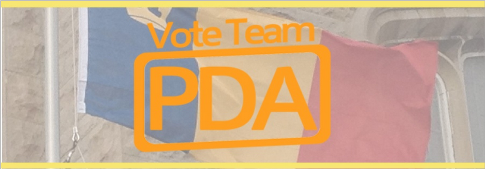

TEAM PDA

BY NICK FARIS ASSISTANT SPORTS EDITOR
Team PDA is composed of Alexander Prescott, the presidential candidate; Craig Draeger, the vice president of operations candidate; and Lisa Acchione, the vice president of university affairs candidate.
Prescott is a third-year biochemistry student from Sudbury, Ont. He’s currently a member of the Student Life Centre Council and serves as an ASUS Rep to the AMS. A former member of Queen’s Model United Nations, Prescott has also served on ASUS’ Special Initiatives Grant Committee.
“[AMS president is] a position that requires depth of character for a person that’s able to handle many different situations coming at them, and to liaise with many different individuals and bodies at the same time,” Prescott, ArtSci ’14 said. “It requires a type of skill set that I feel I could bring to the table – one that requires deep character.”
Draeger, a fourth-year philosophy and political studies student from Thunder Bay, Ont., has held a variety of positions within the AMS, including his current role as an elected student director on the AMS Board of Directors and previous experience as the Clubs Manager in 2011-12. Draeger, ArtSci ’13 also has journalistic experience as a former Copy Editor and Opinions Editor for the Journal and as the co-chair of the Queen’s Media and Journalism Conference in 2012.
“I decided to run because of the number of things I saw in the AMS that weren’t working for students the way that they should,” Draeger said. “It needs to be a two-way street in which [the AMS and students] are both projecting and receiving information.”
Acchione, is a third-year philosophy and english literature student from Caledon, Ont. She’s gained extensive experience in Queen’s residences as a residence facilitator and as the vice president of discipline for the Main Campus Residents’ Council (MCRC). Acchione has contributed to a number of committees within the MCRC, the AMS and Queen’s Senate, currently serving as a member on the Senate Committee on Non-Academic Discipline.
“I was able to be a vice president of a smaller society, but a society that nonetheless has a partnership with the AMS,” Acchione said. “I’ve had a variety of experiences that I think really relates to this position.”
Team PDA is composed of Alexander Prescott, the presidential candidate; Craig Draeger, the vice president of operations candidate; and Lisa Acchione, the vice president of university affairs candidate.
Prescott is a third-year biochemistry student from Sudbury, Ont. He’s currently a member of the Student Life Centre Council and serves as an ASUS Rep to the AMS. A former member of Queen’s Model United Nations, Prescott has also served on ASUS’ Special Initiatives Grant Committee.
“[AMS president is] a position that requires depth of character for a person that’s able to handle many different situations coming at them, and to liaise with many different individuals and bodies at the same time,” Prescott, ArtSci ’14 said. “It requires a type of skill set that I feel I could bring to the table – one that requires deep character.”
Draeger, a fourth-year philosophy and political studies student from Thunder Bay, Ont., has held a variety of positions within the AMS, including his current role as an elected student director on the AMS Board of Directors and previous experience as the Clubs Manager in 2011-12. Draeger, ArtSci ’13 also has journalistic experience as a former Copy Editor and Opinions Editor for the Journal and as the co-chair of the Queen’s Media and Journalism Conference in 2012.
“I decided to run because of the number of things I saw in the AMS that weren’t working for students the way that they should,” Draeger said. “It needs to be a two-way street in which [the AMS and students] are both projecting and receiving information.”
Acchione, is a third-year philosophy and english literature student from Caledon, Ont. She’s gained extensive experience in Queen’s residences as a residence facilitator and as the vice president of discipline for the Main Campus Residents’ Council (MCRC). Acchione has contributed to a number of committees within the MCRC, the AMS and Queen’s Senate, currently serving as a member on the Senate Committee on Non-Academic Discipline.
“I was able to be a vice president of a smaller society, but a society that nonetheless has a partnership with the AMS,” Acchione said. “I’ve had a variety of experiences that I think really relates to this position.”